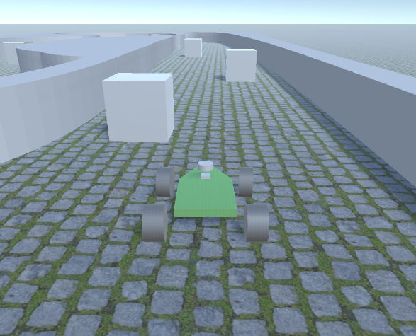

Gap Follow F1Tenth Control
LiDAR Based Control algorithm for F1Tenth

Links
Introduction
Gap following is a technique used in autonomous driving or robotics where a vehicle or robot navigates through an environment by identifying and following open spaces or "gaps" between obstacles.
The basic idea is to detect and pursue the widest available space or passage in the surroundings. This involves using sensors (like Lidar, cameras, or ultrasonic sensors) to perceive the environment and identify areas that are clear of obstacles. By following these open areas, the vehicle or robot can navigate safely and efficiently.
Approach
Context:
Top View of the environment:
POV:
Lidar Data visualized in polar coordinates:
The car is at the center of the polar coordinates (0,0). Black: Lidar Data. Blue: Gap(s). Green: Centerpoint of the largest gap.
Definition of 'gap':
If the Lidar data exceeds a certain threshold distance (look-ahead distance), it is assumed to be free space. Consecutive free spaces grouped together comprise a gap.
Vanilla Approach:
The initial approach aimed to identify gaps, determine the largest one, and navigate towards its centerpoint.
However, this method assumed the vehicle to be a point mass, neglecting the car's actual physical dimensions like track width and wheelbase. This resulted in risks of collisions while following the next identified gap.
Dilating Edges:
To account for the car's size and dimensions, a more sophisticated strategy involved 'dilating' the perceived obstacles detected by the sensors.
How to dilate obstacles?
- Detecting Significant Changes in Sensor Values (diff_objs): Analyze sensor data to identify significant changes within a specified range.
- Dilation and Filtering Operations (isDiffHigh): Use detected changes to expand obstacles' boundaries, accounting for the car's physical dimensions.
Orange: Detected disparities. Yellow: Updated Gap(s). Green: Centerpoint of the largest updated gap.
Speed and Steering Control:
Steering Control points towards the centerpoint of the largest (updated) gap. Speed is calculated as an exponential decay function of the steering angle. This relationship helps maintain traction and should be tuned for the environment.
Final Result
The Algorithm
Notes
This was done as a part of the coursework of CSE 568 at the University at Buffalo. The source code is not available publicly to avoid academic integrity violations. Please feel free to contact the author if you wish to access the source code.